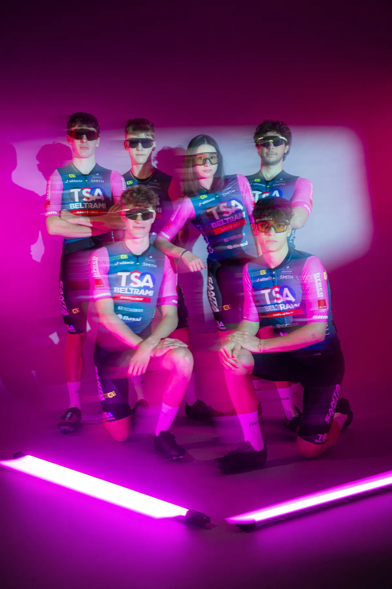
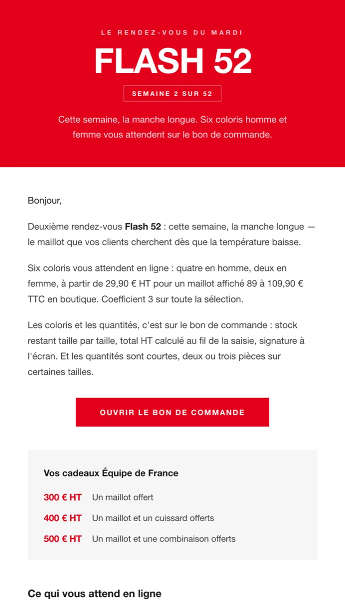
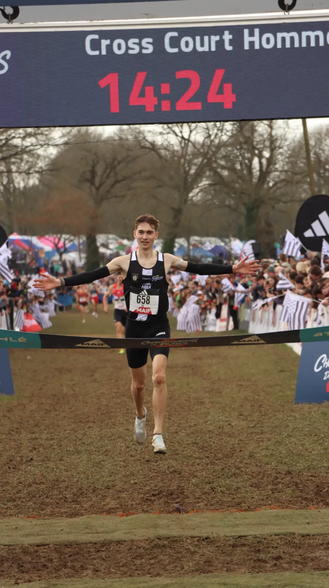

Mes projets
Des grandes courses cyclistes aux marques de vélo : chaque projet raconte ce que j'ai fait, comment, et ce que ça a donné.
Liste des projets

Faun Tour Femmes 2026
Communication avant, pendant et après la course, couverture en direct, fonds de podium et organisation événementielle d'une course féminine internationale : 1,6 million de vues sur les réseaux.

Championnats d'Europe de cyclisme 2025
Quatre jours de couverture live et de production photo au cœur de l'élite européenne, en Drôme-Ardèche.

Boucles Drôme Ardèche 2026
Calendrier éditorial pour une course UCI ProSeries, supports de podium et images en caméra embarquée.

L'Ardéchoise 2026
Huit mois de community management pour l'une des plus grandes cyclosportives d'Europe : +30 % d'abonnés Instagram et 2,2 millions de vues Facebook.

Circuit de Saône-et-Loire 2026
Site officiel, réseaux sociaux et pilotage des maillots, dossards et de la signalétique pour la 54e édition de cette course élite nationale.

Championnats de France VTT 2026
Quatre jours de reportage au Dévoluy : cross-country, short track, podiums et coulisses.

Alé Custom France
J'ai lancé le compte Instagram français de la marque : direction artistique, rendez-vous éditoriaux, shootings et valorisation des clubs.

Photographie & drone
Une série personnelle sur la Côte de Granit Rose, entre prises de vue au reflex et au drone.

Tenues custom pour clubs
Je crée des maillots et cuissards sur mesure pour des clubs, du croquis à la maquette validée et signée.

Newsletters & Flash 52
Newsletters pour Alé, Cipollini et Suplest, et un rendez-vous B2B hebdomadaire codé en HTML, avec bon de commande en ligne.

Boutique officielle de la FFC
Boutique officielle de la Fédération Française de Cyclisme : catalogue, rendus 3D de la gamme Équipe de France 2026, bannières et précommandes.

Italvet — refonte du site e-commerce
J'ai modernisé l'identité numérique et l'expérience d'achat du distributeur d'Alé, Cipollini et Ursus, de la maquette Figma à l'intégration Shopify.

In Yellow Consulting
Maquettes et développement du site de la première agence de marketing sportif en France.
Ce portfolio
Direction artistique et développement front-end de ma propre vitrine en ligne.

Championnats de France de cross 2026
Posts vainqueurs codés sur mesure, programmes, présentation de l'équipe, photo et drone pour les Championnats de France de cross-country à Carhaix.